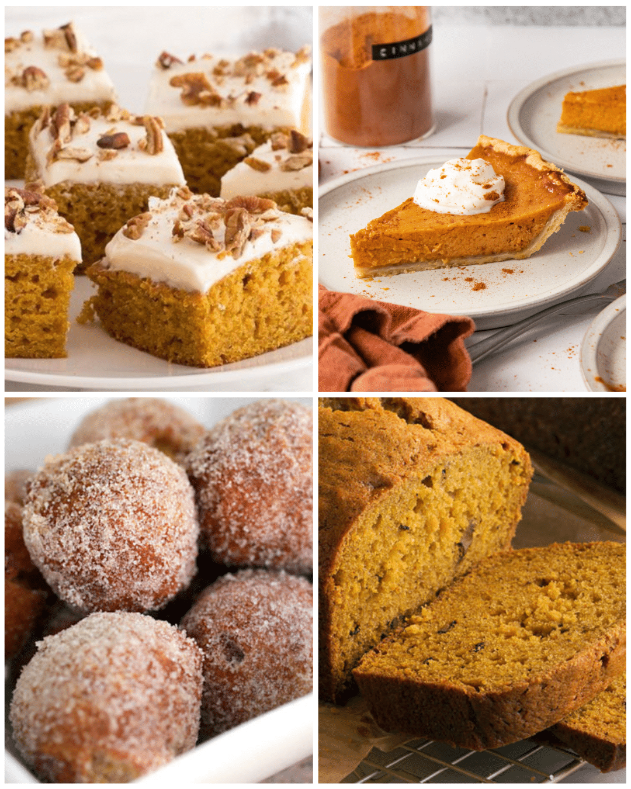
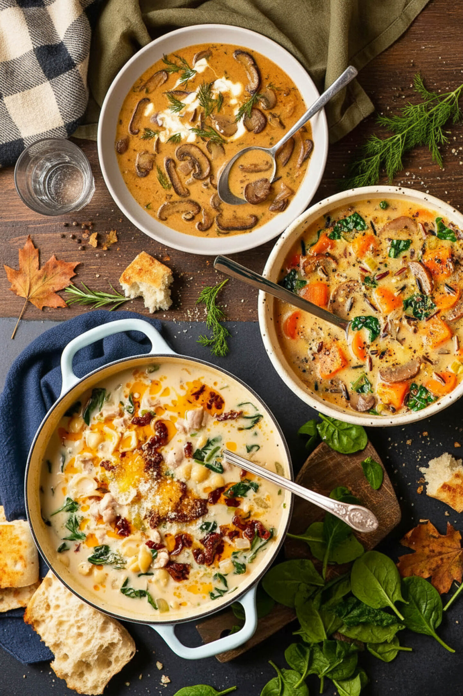
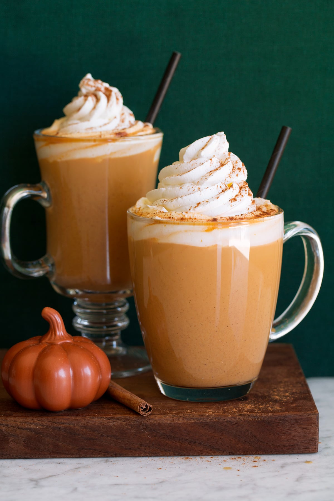

I associate the fall season with comfort food. Seasonal sweets, soups, drinks, and fall holiday food all taste the best when eaten during this season.
Sweets

With pumpkin in season, there are many sweet dishes to be eaten. Pumpkin pie, pumpkin bread, pumpkin spice cake, pumpkin chocolate chip cookies, and more! I also have a soft spot for candied apples. Tart green apples covered in caramel, chocolate, and nuts are my favorite. Pies are also in peak season due to Thanksgiving. Apple pie, pecan pie, banana cream pie, key lime pie, chocolate pudding pie, lemon meringue, and so much more. And of course, all the available candy makes me nostalgic for the good old days of trick-or-treating.
Soups

The weather grows colder by the day. What better way to warm up than with a bowl of your favorite soup! My favorites are a hearty beef stew, chicken noodle, baked potato, cheddar and broccoli, chicken enchilada, and pozole.
Check out Delish.com for their list of the 62 best fall soups.
Drinks

Now that your mouth is watering, let's quench that thirst by discussing fall drinks. Similar to why soups taste the best in the fall, I also argue that coffee tastes better. That warm, delicious beverage brightens your day and warms your stomach. A pumpkin spice latte, an americano, or perhaps a plain coffee with a pumpkin or caramel coffee creamer.
Fall is also the time for Oktoberfest! A Bavarian fare consisting of traditional German food and music, but more importantly, crafted beer. There is nothing quite like enjoying a pint surrounded by fun and good company. Check out Snowbird.com to learn about their Oktoberfest.
Fall Holiday Foods
I will discuss fall holidays more thoroughly in their section, but I wanted to give special attention to the food. On Halloween, I usually have homemade chili and sweets. On Día de los Muertos, I eat pan de muertos, salsa, beans, rice, and a main course of pozole, tacos, tamales, empanadas, or whatever strikes my fancy that year. As for Thanksgiving, I enjoy a large turkey, mashed potatoes with gravy, green beans, corn, macaroni pie, fresh rolls, corn bread, cranberry sauce, and of course the pies.